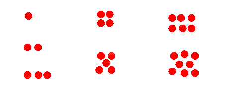

- Recall that
values are
intrinsic and
does not depend on
the representation
People from any culture can understand values when you represent it in this universal way:

- Negative values are
also
intrinsic
and can be
represented in a way that
is culture independent
(Negative values are values owed to somebody and the "owe" concept is universal and culture independent)
- Let use represent in
CS255 the
negative values with
red dots:
 The figure above represents these values:
- negative one
- negative two
- ...
- and so on
- This is what
we want to achieve:
- Device a
way to
represent
signed integer values
I.e.: we must represent both the positive values and the negative values (including ZERO)
- Device a
way to
represent
signed integer values